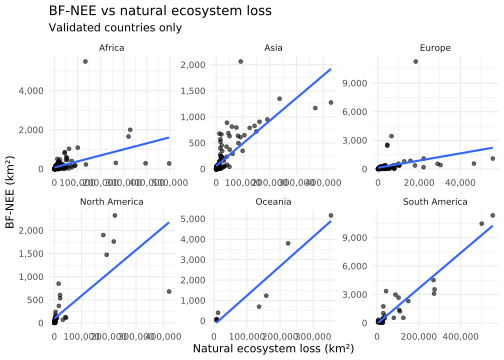

# A tibble: 24 × 3
continent year n
<chr> <dbl> <int>
1 Africa 2000 41
2 Africa 2005 41
3 Africa 2010 41
4 Africa 2015 41
5 Asia 2000 42
6 Asia 2005 42
7 Asia 2010 41
8 Asia 2015 41
9 Europe 2000 32
10 Europe 2005 32
# ℹ 14 more rows
Model specification
The first regional consistency model is:
log(BF-NEE + 1) ~ log(natural ecosystem loss + 1) + log(weight sum + 1)
where weight_sum represents the aggregated commodity-consumption and production-attribution component.
BF-NEE and natural ecosystem loss
Code
ggplot( df_model,aes(x = natural_loss_sum_km2,y = bfnee_sum_km2 )) +geom_point(alpha =0.6) +geom_smooth(method ="lm", se =FALSE) +facet_wrap(~ continent, scales ="free") +scale_x_continuous(labels = comma) +scale_y_continuous(labels = comma) +labs(title ="BF-NEE vs natural ecosystem loss",subtitle ="Validated countries only",x ="Natural ecosystem loss (km²)",y ="BF-NEE (km²)" ) +theme_minimal()
`geom_smooth()` using formula = 'y ~ x'

Log-log relationship
Code
ggplot( df_model,aes(x = log_natural_loss,y = log_bfnee )) +geom_point(alpha =0.6) +geom_smooth(method ="lm", se =FALSE) +facet_wrap(~ continent, scales ="free") +labs(title ="Log-log relationship between BF-NEE and natural ecosystem loss",subtitle ="Validated countries only",x ="log(natural ecosystem loss + 1)",y ="log(BF-NEE + 1)" ) +theme_minimal()